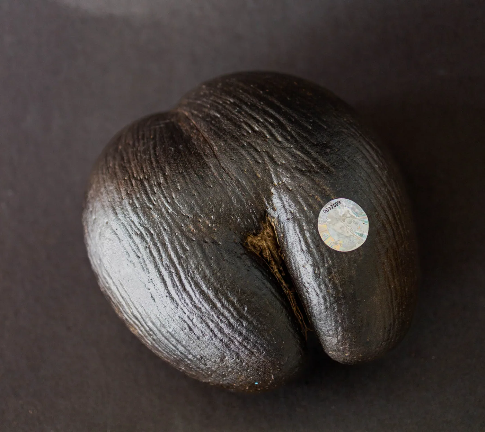
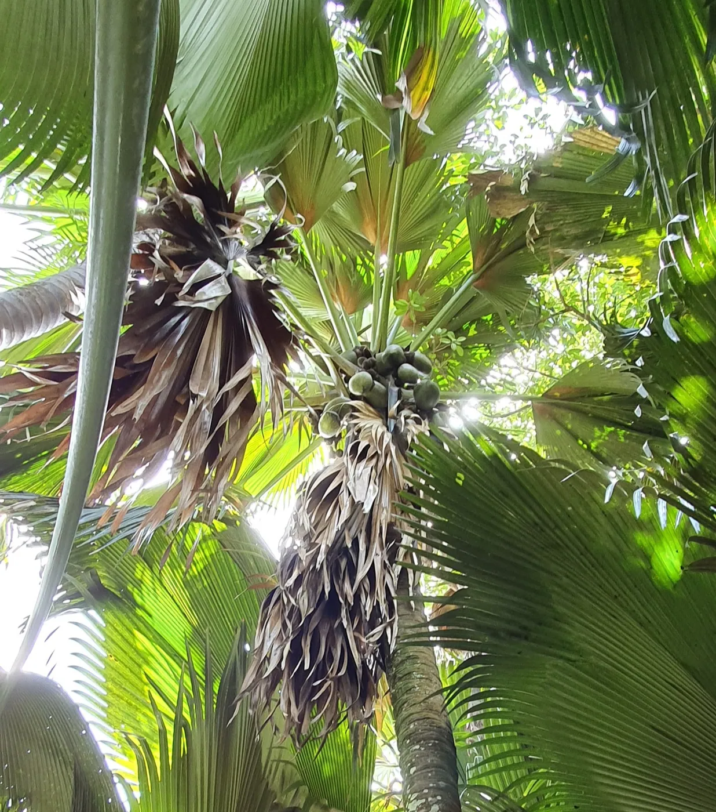
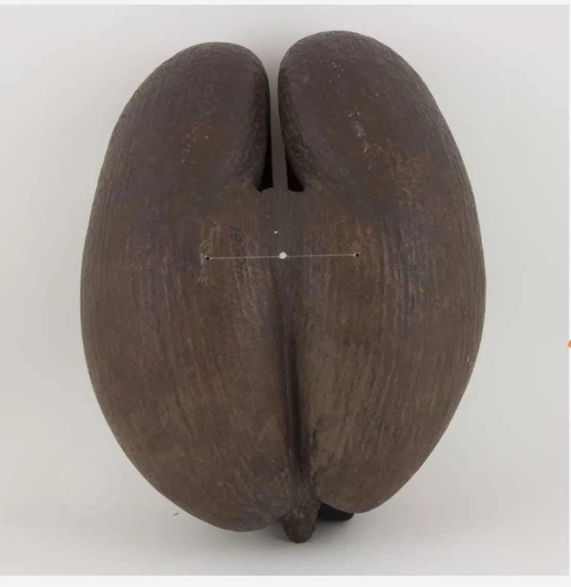

Coco de Mer: the Enigmatic Palm and Its Royal Admirers

The Coco de Mer (Lodoicea maldivica) is a rare and fascinating palm tree native to the Seychelles archipelago. Its distinct double-lobed nut, often referred to as the "love nut" or "sea coconut," has captivated the imaginations of collectors, amateurs, and even royalty from both oriental and European monarchies.

Recently we have embarked upon a journey of discovery into the intriguing world of those who have acquired or cherished the Coco de Mer and their connections to this remarkable botanical wonder.
Well known in modern times throughout Asia, however the Coco de Mer was known in ancient times by Emperor Qianlong of China (1736-1795). During the Qing dynasty, Emperor Qianlong developed a deep fascination with the Coco de Mer. In 1762, he received a specimen from the French diplomat Jean-Gabriel Charpentier de Cossigny, which he showcased in the Imperial Garden in Beijing. This gift sparked immense interest among Chinese scholars and contributed to the palm's mystique within the oriental monarchy.
Emperor Meiji of Japan (1868-1912): Emperor Meiji, known for his passion for botany and Western scientific advancements, acquired a Coco de Mer specimen for the Tokyo Imperial Palace in the late 19th century. The palm's extraordinary shape and size captured the Emperor's attention and further popularized the fascination with the Coco de Mer among Japanese collectors.
In the West, King Louis XIV of France (1643-1715): Known for his opulent tastes, received a Coco de Mer as a gift from the Seychelles during his reign. The palm's sensuous form and symbolism intrigued the French monarch, who prominently displayed it in the Palace of Versailles, adding to the aura of mystery surrounding the plant.
A well known figure is Queen Victoria who had a special connection with the Seychelles. Her reign marked an era of exploration and scientific curiosity. In 1844, she received a Coco de Mer specimen as a gift from the Seychelles. It was showcased in the royal conservatory at Windsor Castle, arousing public fascination with the unusual palm. Queen Victoria's passion for botany greatly influenced Victorian England's horticultural pursuits, and the Coco de Mer became a sought-after collector's item.
One notable individual who possessed a Coco de Mer was Prince Albert I of Monaco. Prince Albert I, who reigned from 1889 to 1922, had a keen interest in natural history and was an avid collector of botanical specimens. He acquired a Coco de Mer during his travels,adding it to his renowned collection housed within the Oceanographic Museum of Monaco
Another prominent figure who owned a Coco de Mer was Emperor Franz Joseph I of Austria-Hungary. Emperor Franz Joseph I, who ruled from 1848 to 1916, received the Coco de Mer as a gift during his visit to the Seychelles in 1896. This unique botanical treasure became part of the imperial collections and was displayed at the Natural History Museum in Vienna.
In addition to royal figures, Coco de Mer specimens have also found their way into the collections of renowned museums. One such institution is the Royal Botanic Gardens, Kew in London, which boasts a comprehensive botanical collection. The gardens acquired a Coco de Mer specimen in 1850, and it remains a prized possession to this day, captivating visitors with its extraordinary size and form.

Another notable institution is the Field Museum in Chicago, known for its extensive natural history exhibits. The museum houses a remarkable Coco de Mer specimen, collected in the late 19th century, which is showcased as part of its botanical treasures.
The Coco de Mer's allure extends far beyond its exotic origin. Through the ages, this extraordinary palm has captivated the imaginations of royalty, collectors, and amateurs from both oriental and European monarchies. From Emperor Qianlong's fascination in China to Queen Victoria's botanical pursuits in England, the Coco de Mer has left an indelible mark on the world of horticulture and botanical admiration. Its presence in the gardens of monarchs continues to intrigue and inspire those who encounter this rare and enigmatic palm.